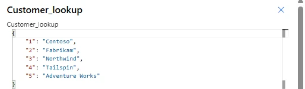

- Power Automate
- Level 5 · Performance and scale · 3 of 6
Avoiding nested loops
A common need: orders hold a customer ID, customers hold the name, and you want each order with its customer name. A loop inside a loop works, but the actions multiply: one list's size times the other's.
The same answer, 24 seconds against 0
WhatBuild a lookup object (ID → name) once, then read names from it in a Select.
WhyNested loops grow as rows × rows: 1,000 × 1,000 is a million actions.
Demo30 orders and 5 customers.
Two ways to add customer names
Nested loop
For each of 30 orders
Filter 5 customers for its ID
≈ 30 × several actions, 24 s
Lookup object
Build
{"1":"Contoso",…} onceSelect over orders, read the name by key
3 actions, 0 s


Building the lookup object in three steps
From list to dictionary
Customers [{"id":1,"name":"Contoso"}, …]
1. Customer pairs (Select, text mode) → "1":"Contoso""2":"Fabrikam"…
2. Customer lookup (Compose) → {"1":"Contoso","2":"Fabrikam",…}
3. Orders with names (Select) → read
lookup['3'] = Northwindconcat('"', string(item()?['id']), '":"', item()?['name'], '"')| Piece | What it does |
|---|---|
concat(...) | Each customer becomes a fragment "1":"Contoso". |
json(concat('{', join(body('Customer_pairs'), ','), '}'))| Piece | What it does |
|---|---|
join(..., ',') | Joins the fragments with commas. |
concat('{', ..., '}') | Wraps them in braces. |
json(...) | Turns the text into a real object. |

outputs('Customer_lookup')?[string(item()?['customerId'])]| Piece | What it does |
|---|---|
item()?['customerId'] | The order's customer ID, e.g. 3. |
string(...) | Keys are text, so convert. |
lookup?['3'] | One read: Northwind. |
Watch out
- Names containing quotes break the JSON; clean them with
replace()first. - Duplicate IDs: the last one wins.
- Unknown IDs return null; wrap with
coalesce().
New to this? Start from the basics optional
Lookup object: a JSON object used like a dictionary: read a value by its key in one step.
Common mistakes
- Apply to each inside Apply to each for matching.
- Numeric keys not converted with
string(). - Building the lookup inside the loop.